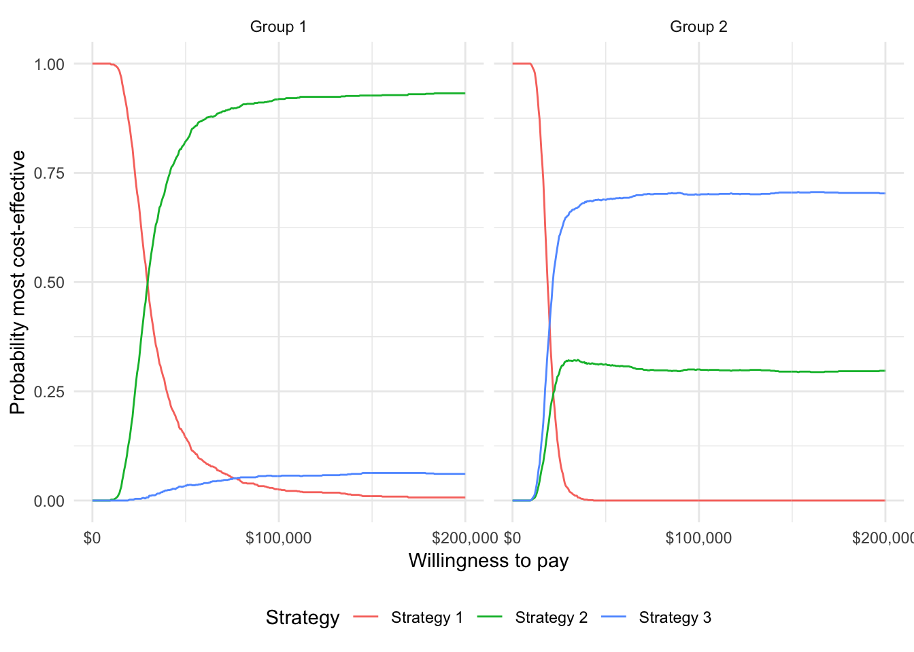
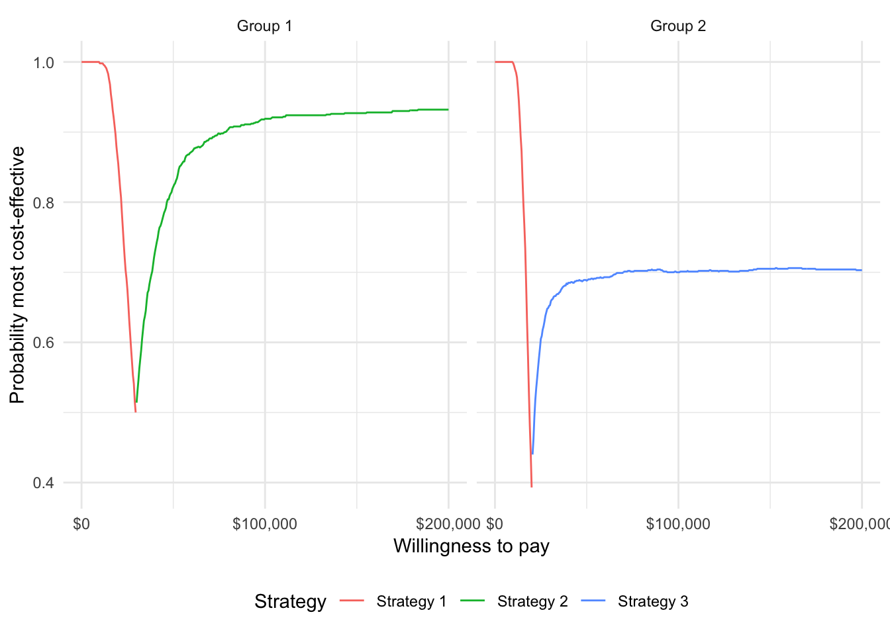
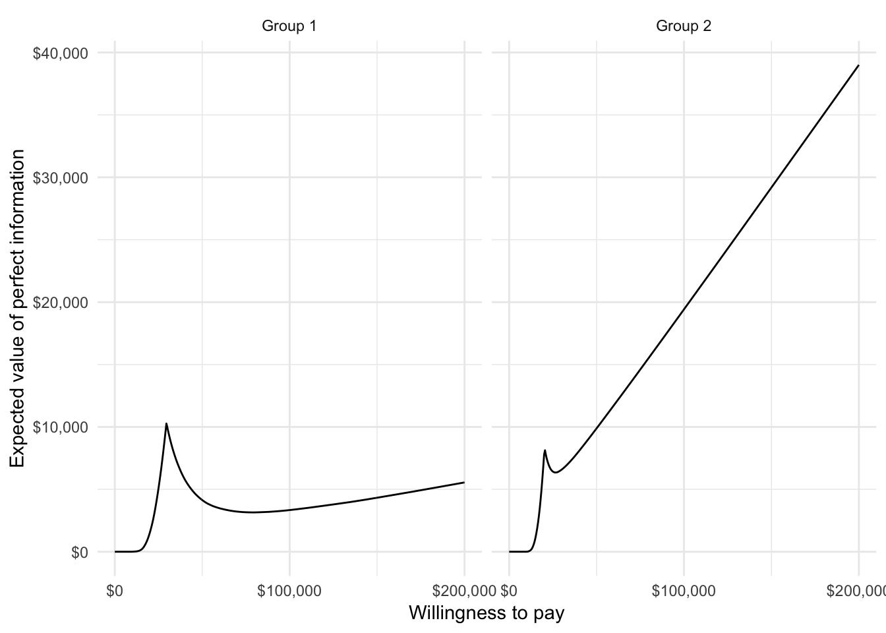
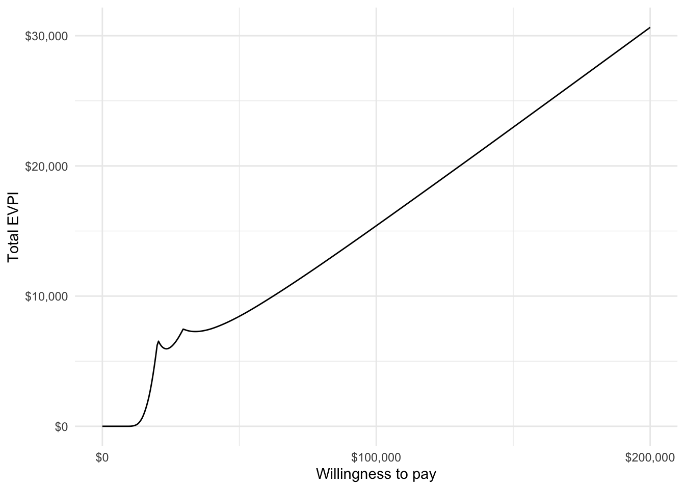
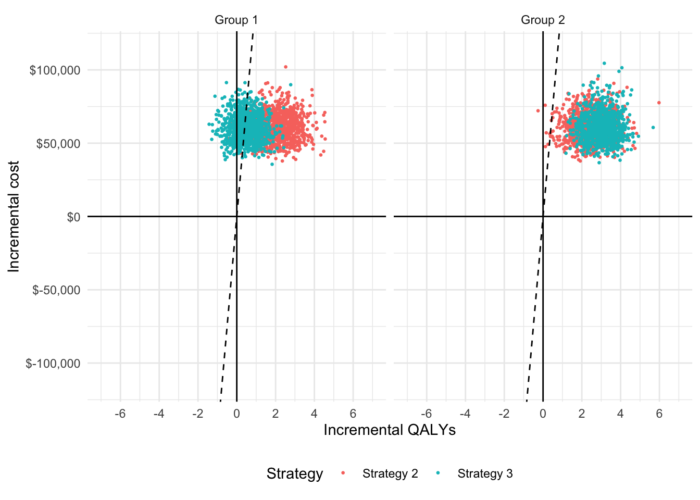

1 Overview
Individualized cost-effectiveness analysis (iCEA) evaluates the cost-effectiveness of treatments at the individual (or subgroup) level. This has two major implications:
- Optimal treatments will vary across patients.
- Treatments will be more cost-effective for some patients than others.
The hesim package help facilitate iCEA by providing a number of functions for analyzing subgroup level health and cost outcomes from simulation models that quantify parameter uncertainty using probabilistic sensitivity analysis (PSA). These functions take simulation output and generate measures commonly used for technology assessment including:
- net monetary benefits (NMBs).
- incremental cost-effectiveness ratios (ICERs).
- cost-effectiveness acceptability curves (CEACs).
- the expected value of perfect information (EVPI).
The rest of this document provides an overview of iCEA and how it can be conducted using hesim. The perspective is Bayesian in nature in that it is concerned with estimating the entire distribution of outcomes rather than just expected values (Baio 2012; Baio and Dawid 2015). It also stresses that both optimal treatments and the cost-effectiveness of those treatments vary across individuals (Basu and Meltzer 2007; Espinoza et al. 2014).
2 Net monetary benefits
Decision analysis provides a formal framework for making treatment decisions based on the utility that a therapy provides to a patient population. Decisions are typically made using a net benefit approach grounded in expected utility theory. The optimal treatment strategy is the one that maximizes expected NMBs where expected NMBs are calculated by averaging over the patient population and uncertain parameters \(\theta\). For a given subgroup \(g\) and parameter set \(\theta\), NMBs are computed as the difference between the monetized health gains from an intervention less costs, or,
\[ \begin{aligned} NMB_g(j,\theta) = e_{gj}\cdot k- c_{gj}, \end{aligned} \]
where \(e_{gj}\) and \(c_{gj}\) are measures of clinical effectiveness (e.g. QALYs) and costs in subgroup \(g\) using treatment \(j\) respectively, and \(k\) is a decision makers willingness to pay per unit of clinical effectiveness. The optimal treatment for a given subgroup is the one that maximizes expected NMBs,
\[ \begin{aligned} j^{*}_g = \text{argmax}_j E_{\theta} \left[NMB_g(j,\theta)\right]. \end{aligned} \]
In practice, new interventions are usually compared to a standard treatment often referred to as the comparator. In these cases, a new treatment in a given subgroup is preferred to the comparator if the expected incremental net monetary benefit (INMB) of the new treatment is positive; that is, treatment 1 is preferred to treatment 0 in subgroup \(g\) if \(E_\theta \left[INMB_g\right] > 0\) where the INMB in a particular subgroup is given by
\[ \begin{aligned} INMB_g(\theta) = NMB_g(j = 1, \theta) - NMB_g(j = 0, \theta). \end{aligned} \] Equivalently, treatment \(1\) is preferred to treatment \(0\) in subgroup \(g\) if the incremental cost-effectiveness ratio (ICER) is greater than the willingness to pay threshold \(k\),
\[ \begin{aligned} k > \frac{c_{g1} - c_{s0}}{e_{g1} - e_{g0}} = ICER_g. \end{aligned} \]
3 Probabilistic sensitivity analysis
Expected NMBs are expected values and ignore parameter uncertainty. This implies that NMBs are uncertain and that optimal treatment strategies may be selected incorrectly. This uncertainty can be quantified using PSA, which uses Bayesian and quasi-Bayesian techniques to estimate the distribution of NMBs given the distribution of the parameters for each treatment strategy
Since the joint distribution of the model parameters cannot be derived analytically (except in the simplest cases), the distribution of \(\theta\) is approximated by simulating the parameters from their joint posterior distribution and calculating relevant quantities of interest as a function of the simulated parameters. For each treatment strategy and subgroup, PSA therefore produces \(n\) random draws from the posterior distribution of clinical effectiveness and costs,
\[ \begin{aligned} e_{gj} &= [e_{gj}^1, e_{gj}^2, \dots, e_{gj}^n] \\ c_{gj} &= [c_{gj}^1, c_{gj}^2, \dots, c_{gj}^n]. \end{aligned} \]
Below we simulate costs and QALYs for three treatment strategies and two subgroups (in a real world analysis, this output would be derived from a detailed health-economic simulation model). Strategy 1 is the current standard of care; it is the cheapest therapy, but also the least efficacious. Strategies 2 and 3 are equally costly, but Strategy 2 is more effective in subgroup 1 while Strategy 3 is more effective in subgroup 2.
set.seed(131)
n_samples <- 1000
# cost
c <- vector(mode = "list", length = 6)
names(c) <- c("Strategy 1, Grp 1", "Strategy 1, Grp 2", "Strategy 2, Grp 1",
"Strategy 2, Grp 2", "Strategy 3, Grp 1", "Strategy 3, Grp 2")
c[[1]] <- rlnorm(n_samples, 2, .1)
c[[2]] <- rlnorm(n_samples, 2, .1)
c[[3]] <- rlnorm(n_samples, 11, .15)
c[[4]] <- rlnorm(n_samples, 11, .15)
c[[5]] <- rlnorm(n_samples, 11, .15)
c[[6]] <- rlnorm(n_samples, 11, .15)
# effectiveness
e <- c
e[[1]] <- rnorm(n_samples, 8, .2)
e[[2]] <- rnorm(n_samples, 8, .2)
e[[3]] <- rnorm(n_samples, 10, .8)
e[[4]] <- rnorm(n_samples, 10.5, .8)
e[[5]] <- rnorm(n_samples, 8.5, .6)
e[[6]] <- rnorm(n_samples, 11, .6)
# cost and effectiveness by strategy and simulation
library("data.table")
ce <- data.table(sample = rep(seq(n_samples), length(e)),
strategy = rep(paste0("Strategy ", seq(1, 3)),
each = n_samples * 2),
grp = rep(rep(c("Group 1", "Group 2"),
each = n_samples), 3),
cost = do.call("c", c), qalys = do.call("c", e))
head(ce)## sample strategy grp cost qalys
## 1: 1 Strategy 1 Group 1 6.808115 7.984456
## 2: 2 Strategy 1 Group 1 6.997936 7.984085
## 3: 3 Strategy 1 Group 1 8.183247 8.221359
## 4: 4 Strategy 1 Group 1 7.423647 8.155250
## 5: 5 Strategy 1 Group 1 7.063846 8.292916
## 6: 6 Strategy 1 Group 1 7.234418 8.066187For any given willingness to pay \(k\), expected NMBs can be calculated by strategy, subgroup, and simulation number. For example, with \(k=150,000\), a reasonable estimate of the value of a life-year in the United States, Strategy 2 provides the highest expected NMBs in subgroup 2 while Strategy 3 provides the highest expected NMBs in subgroup 2.
ce <- ce[, nmb := 150000 * qalys - cost]
enmb <- ce[, .(enmb = mean(nmb)), by = c("strategy", "grp")]
enmb <- dcast(enmb, strategy ~ grp, value.var = "enmb")
print(enmb)## strategy Group 1 Group 2
## 1: Strategy 1 1200672 1200323
## 2: Strategy 2 1447770 1509467
## 3: Strategy 3 1215793 1589370A number of measures have been proposed in the health economics literature to summarize the PSA. Below we describe the most common measures, which can be calculated using the functions icea and icea_pw. The icea function summarizes results by taking into account each treatment strategy in the analysis, while the function icea_pw summarizes “pairwise” results in which each treatment is compared to a comparator.
We can use the icea function to summarize results from our data.table object of simulated output for a range of willingness to pay values,
library("hesim")
ktop <- 200000
icea <- icea(ce, k = seq(0, ktop, 500), sample = "sample", strategy = "strategy",
grp = "grp", e = "qalys", c = "cost")The most important input in icea is the data.table object (x) containing columns for simulation number (sim), treatment strategy (strategy), subgroup (grp), clinical effectiveness (e), and costs (c). Users specify the names of the relevant columns in their output table as strings. The other relevant parameter is \(k\), which is a range of willingness to pay values to use for estimating NMBs.
Likewise, we can use icea_pw to summarize the PSA when directly comparing the two treatment strategies (Strategy 2 and Strategy 3) to the comparator (Strategy 1).
icea_pw <- icea_pw(ce, k = seq(0, ktop, 500), comparator = "Strategy 1",
sample = "sample", strategy = "strategy", grp = "grp",
e = "qalys", c = "cost")The same inputs are used as in icea except users must specify the name of the comparator strategy.
3.1 Probability most cost-effective
A useful summary measure for quantifying uncertainty is the probability that each treatment strategy is the most cost effective. For a particular subgroup, this is estimated from simulation output as the proportion of simulation draws that each strategy has the highest NMB. For example, consider a random sample of 10 draws from the PSA simulation output and suppose \(k\) is again equal to \(150,000\).
random_rows <- sample(1:n_samples, 10)
nmb_dt <- dcast(ce[sample %in% random_rows & grp == "Group 2"],
sample ~ strategy, value.var = "nmb")
setnames(nmb_dt, colnames(nmb_dt), c("sample", "nmb1", "nmb2", "nmb3"))
nmb_dt <- nmb_dt[, maxj := apply(nmb_dt[, .(nmb1, nmb2, nmb3)], 1, which.max)]
nmb_dt <- nmb_dt[, maxj := factor(maxj, levels = c(1, 2, 3))]| sample | nmb1 | nmb2 | nmb3 | maxj |
|---|---|---|---|---|
| 76 | 1202301 | 1636179 | 1567846 | 2 |
| 373 | 1200018 | 1607944 | 1623927 | 3 |
| 428 | 1204742 | 1534322 | 1566590 | 3 |
| 494 | 1235582 | 1441176 | 1720674 | 3 |
| 591 | 1218996 | 1108168 | 1542916 | 3 |
| 645 | 1217311 | 1504604 | 1586612 | 3 |
| 735 | 1192570 | 1537154 | 1379873 | 2 |
| 807 | 1213061 | 1420991 | 1359655 | 2 |
| 860 | 1209484 | 1345773 | 1503219 | 3 |
| 995 | 1197708 | 1495210 | 1518871 | 3 |
mce <- prop.table(table(nmb_dt$maxj))
print(mce)##
## 1 2 3
## 0.0 0.3 0.7In this example, treatments 1, 2, and 3 have the highest NMBs a fraction 0, 0.3, and 0.7 of the time respectively. The icea function performs this same calculations for a range of values of \(k\) and all nsims random draws of the simulation output. The output is a tidy data.table which facilitates plotting with ggplot.
library("ggplot2")
library("scales")
theme_set(theme_minimal())
ggplot2::ggplot(icea$mce, aes(x = k, y = prob, col = factor(strategy))) +
geom_line() + facet_wrap(~grp) + xlab("Willingness to pay") +
ylab("Probability most cost-effective") +
scale_x_continuous(breaks = seq(0, ktop, 100000), label = scales::dollar) +
theme(legend.position = "bottom") + scale_colour_discrete(name = "Strategy")
In group 1, Strategy 2 provides the greatest NMBs with high probability for almost all reasonable values of k. In group 2, the results are less certain, although Strategy 3 provides the greatest NMBs with a higher probability than Strategy 2.
3.2 Cost-effectiveness acceptability frontier (CEAF)
One drawback of the previous plot is that the probability of being cost-effective cannot be used to determine the optimal treatment option. Instead, if a decision-makers objective is to maximize health gain, then decisions should be based on the expected net monetary benefit (Barton, Briggs, and Fenwick 2008). The cost-effectiveness acceptability frontier (CEAF), which plots the probability that the optimal treatment strategy (i.e., the strategy with the highest expected NMB) is cost-effective, is appropriate in this context.
A CEAF curve can be easily created by using the best column to subset to the treatment strategy with the highest expected NMB for each willingness to pay value and group.
ggplot2::ggplot(icea$mce[best == 1], aes(x = k, y = prob, col = strategy)) +
geom_line() + facet_wrap(~grp) + xlab("Willingness to pay") +
ylab("Probability most cost-effective") +
scale_x_continuous(breaks = seq(0, ktop, 100000), label = scales::dollar) +
theme(legend.position = "bottom") + scale_colour_discrete(name = "Strategy")
3.3 Value of perfect information
One draw back of the previous measure is that it ignores the magnitude of cost or QALY gains. A measure which combines the probability of being most effective with the magnitude of the expected NMB is the expected value of perfect information (EVPI). Intuitively, the EVPI provides an estimate of the amount that a decision maker would be willing to pay to collect additional data and completely eliminate uncertainty. Mathematically, the EVPI is defined as the difference between the maximum expected NMB given perfect information and the maximum expected NMB given current information. In other words, we calculate the NMB for the optimal treatment strategy for each random draw of the parameters and compare that to the NMB for the treatment strategy that is optimal when averaging across all parameters. Mathematically, the EVPI for subgroup \(g\) is,
\[ \begin{aligned} EVPI_g &= E_\theta \left[max_j NMB_g(j, \theta)\right] - max_j E_\theta \left [ NMB_g(j, \theta)\right]. \\ \end{aligned} \]
To illustrate consider the same random sample of 10 draws from our simulation output used above.
strategymax_g2 <- which.max(enmb[[3]])
nmb_dt <- nmb_dt[, nmbpi := apply(nmb_dt[, .(nmb1, nmb2, nmb3)], 1, max)]
nmb_dt <- nmb_dt[, nmbci := nmb_dt[[strategymax_g2 + 1]]]
kable(nmb_dt, digits = 0, format = "html")| sample | nmb1 | nmb2 | nmb3 | maxj | nmbpi | nmbci |
|---|---|---|---|---|---|---|
| 76 | 1202301 | 1636179 | 1567846 | 2 | 1636179 | 1567846 |
| 373 | 1200018 | 1607944 | 1623927 | 3 | 1623927 | 1623927 |
| 428 | 1204742 | 1534322 | 1566590 | 3 | 1566590 | 1566590 |
| 494 | 1235582 | 1441176 | 1720674 | 3 | 1720674 | 1720674 |
| 591 | 1218996 | 1108168 | 1542916 | 3 | 1542916 | 1542916 |
| 645 | 1217311 | 1504604 | 1586612 | 3 | 1586612 | 1586612 |
| 735 | 1192570 | 1537154 | 1379873 | 2 | 1537154 | 1379873 |
| 807 | 1213061 | 1420991 | 1359655 | 2 | 1420991 | 1359655 |
| 860 | 1209484 | 1345773 | 1503219 | 3 | 1503219 | 1503219 |
| 995 | 1197708 | 1495210 | 1518871 | 3 | 1518871 | 1518871 |
To calculate EVPI, we average NMBs given current information and NMBs given perfect information across simulation draws.
## [1] 1565713print(enmbci)## [1] 1537018print(enmbpi - enmbci)## [1] 28695The icea function performs this same calculation across all simulation draws from the PSA and for a number of values of willingness to pay values \(k\). A plot by group of the the EVPI for different values of \(k\) is shown below. The kinks in the plot represent values of \(k\) where the optimal strategy changes.
ggplot2::ggplot(icea$evpi, aes(x = k, y = evpi)) +
geom_line() + facet_wrap(~grp) + xlab("Willingness to pay") +
ylab("Expected value of perfect information") +
scale_x_continuous(breaks = seq(0, ktop, 100000), label = scales::dollar) +
scale_y_continuous(label = scales::dollar) +
theme(legend.position = "bottom") 
We might also be interested in aggregating across subgroups. In particular, the total EVPI can be calculated as a weighted average of the group specific EVPIs,
\[ \begin{aligned} totEVPI &= \sum_{g=1}^{G} w_g EVPI_g, \end{aligned} \] where \(w_g \in (0, 1)\) is a weight denoting that proportion of the population represented by subgroup \(g\) and \(\sum_{g=1}^{G} w_g = 1\).
w_dt <- data.table(grp = paste0("Group ", seq(1, 2)), w = c(0.25, .75))
evpi <- icea$evpi
evpi <- merge(evpi, w_dt, by = "grp")
totevpi <- evpi[,lapply(.SD, weighted.mean, w = w),
by = "k", .SDcols = c("evpi")]
ggplot2::ggplot(totevpi, aes(x = k, y = evpi)) +
geom_line() + xlab("Willingness to pay") +
ylab("Total EVPI") +
scale_x_continuous(breaks = seq(0, ktop, 100000), label = scales::dollar) +
scale_y_continuous(label = scales::dollar) +
theme(legend.position = "bottom") 
3.4 Distribution of health and cost outcomes
icea produces means, 2.5% quantiles, and 97.5% quantiles for costs and efficacy.
print(icea$summary)## strategy grp e_mean e_lower e_upper c_mean
## 1: Strategy 1 Group 1 8.004532 7.625347 8.399756 7.427476
## 2: Strategy 2 Group 1 10.055709 8.448506 11.642793 60586.499697
## 3: Strategy 3 Group 1 8.510334 7.332195 9.708251 60757.113334
## 4: Strategy 1 Group 2 8.002205 7.597320 8.371528 7.368609
## 5: Strategy 2 Group 2 10.467755 8.851752 11.956592 60696.563802
## 6: Strategy 3 Group 2 11.000691 9.725894 12.131825 60733.750804
## c_lower c_upper
## 1: 6.134231 9.034617
## 2: 45176.893995 80647.903901
## 3: 44415.464271 79251.737042
## 4: 6.135822 8.885084
## 5: 44094.863030 80046.703058
## 6: 44985.051180 82950.291507Other summary statistics can be computed using R packages such as data.table.
## strategy grp median_cost median_qalys
## 1: Strategy 1 Group 1 7.389074 8.007106
## 2: Strategy 1 Group 2 7.336006 8.007338
## 3: Strategy 2 Group 1 59631.933760 10.046966
## 4: Strategy 2 Group 2 60164.995846 10.462405
## 5: Strategy 3 Group 1 60437.497004 8.504607
## 6: Strategy 3 Group 2 59557.552101 11.0068643.5 Cost-effectiveness plane
The cost-effectiveness plane plots the incremental effectiveness of a treatment strategy (relative to a comparator) against the incremental cost of the treatment strategy. The plot is useful because it demonstrates both the uncertainty and the magnitude of the estimates. Each point on the plot is from a particular random draw from the PSA.
Data for plotting a cost-effectiveness plane comes from the delta output generated from the icea_pw function, which, for each sampled parameter set and treatment strategy, estimates differences in costs, effectiveness, and any other variables specified in custom_varsrelative to the comparator. The dotted line in the plot is the willingness to pay line, with slope equal to the value of \(k\). For a given \(k\), points below the line are cost-effective while those above it are not.
head(icea_pw$delta)## sample strategy grp ie ic
## 1: 1 Strategy 2 Group 1 1.497467 57687.97
## 2: 2 Strategy 2 Group 1 1.428877 65857.23
## 3: 3 Strategy 2 Group 1 3.184584 44830.68
## 4: 4 Strategy 2 Group 1 1.475885 64228.60
## 5: 5 Strategy 2 Group 1 1.045039 58613.55
## 6: 6 Strategy 2 Group 1 1.303221 45173.35ylim <- max(icea_pw$delta[, ic]) * 1.1
xlim <- ceiling(max(icea_pw$delta[, ie]) * 1.1)
ggplot2::ggplot(icea_pw$delta, aes(x = ie, y = ic, col = factor(strategy))) +
geom_jitter(size = .5) + facet_wrap(~grp) +
xlab("Incremental QALYs") + ylab("Incremental cost") +
scale_y_continuous(label = dollar, limits = c(-ylim, ylim)) +
scale_x_continuous(limits = c(-xlim, xlim), breaks = seq(-6, 6, 2)) +
theme(legend.position = "bottom") + scale_colour_discrete(name = "Strategy") +
geom_abline(slope = 150000, linetype = "dashed") +
geom_hline(yintercept = 0) + geom_vline(xintercept = 0)
3.6 Cost-effectiveness acceptability curve (CEAC)
The cost-effectiveness acceptability curve (CEAC) is similar to the MCE plot. The difference is that the CEAC compares each strategy to a single comparator whereas the MCE plot considers all strategies simultaneously. Output to produce a CEAC is generated from the icea_pw function.
The plot shows that, in subgroup 1, Strategy 2 has larger NMBs than Strategy 1 with very high probability for reasonable values of \(k\). Strategy 3 also has higher NMBs than Strategy 1 with probability over 1/2 for values of \(k\) larger than 120,500. In group 2, both Strategy 2 and Strategy 3 have higher NMBs than Strategy 1 for almost all values of \(k\), although this probability is larger for Strategy 2 than Strategy 3 when \(k\) is smaller.
ggplot2::ggplot(icea_pw$ceac, aes(x = k, y = prob, col = factor(strategy))) +
geom_line() + facet_wrap(~grp) + xlab("Willingness to pay") +
ylab("Probability most cost-effective") +
scale_x_continuous(breaks = seq(0, ktop, 100000), label = scales::dollar) +
theme(legend.position = "bottom") + scale_colour_discrete(name = "Strategy")
3.7 Credible intervals for incremental costs and effectiveness
Similar to the icea function, icea_pw produces means, 2.5% quantiles, and 97.5% quantiles for incremental costs and incremental efficacy. The table also contains the ICER, which is equal to expected incremental costs divided by the measure of expected incremental efficacy.
print(icea_pw$summary)## strategy grp ie_mean ie_lower ie_upper ic_mean ic_lower
## 1: Strategy 2 Group 1 2.0511771 0.4379639 3.683574 60579.07 45169.67
## 2: Strategy 3 Group 1 0.5058018 -0.7506895 1.718309 60749.69 44408.40
## 3: Strategy 2 Group 2 2.4655507 0.8324790 4.060741 60689.20 44087.87
## 4: Strategy 3 Group 2 2.9984860 1.7366178 4.187179 60726.38 44977.75
## ic_upper icer
## 1: 80640.24 29533.81
## 2: 79245.04 120105.71
## 3: 80039.84 24614.86
## 4: 82942.89 20252.35Again similar to the icea function, the user can also estimate incremental effects for outcome variables not included in the summary table.
4 Value of individualized care
The previous analyses allow NMBs and optimal treatment decisions to vary by subgroup. In contrast, most CEAs estimate the treatment, \(j^{*}\), that is optimal when averaging NMBs over the entire population. In particular, if the population is broken up into \(G\) distinct subgroups, the optimal treatment is given by,
\[ \begin{aligned} j^{*} = \text{argmax}_j \sum_{g=1}^{G} w_g E_{\theta}\left[NMB_g(j,\theta)\right]. \end{aligned} \]
Basu and Meltzer (2007) have shown that selecting subgroup specific treatments increases expected net benefits relative to this one-size fits all approach. They refer to additional net benefit as the expected value of individualized care (EPIC), which can be computed in terms of NMBs using the subgroup approach illustrated here as,
\[ \begin{aligned} \sum_{g=1}^G w_g E_{\theta}\left[NMB_g(j^{*}_s,\theta)\right] - \sum_{g=1}^G w_g E_{\theta}\left[NMB_g(j^{*},\theta)\right]. \end{aligned} \]
We can estimate the value of individualized care as follows:
# Compute total expected NMB with one-size fits all treatment
ce <- merge(ce, w_dt, by = "grp")
totenmb <- ce[, .(totenmb = weighted.mean(nmb, w = w)), by = c("strategy")]
totenmb_max <- max(totenmb$totenmb)# Compute total expected NMB with individualized treatment
itotenmb_grp_max <- apply(as.matrix(enmb[, -1]), 2, max)
itotenmb_max <- sum(itotenmb_grp_max * w_dt$w)# Compute EVIC
totnmb_scenarios <- c(itotenmb_max, totenmb_max)
names(totnmb_scenarios) <- c("Individualized total expected NMB",
"One-size fits all total expected NMB")
evic <- totnmb_scenarios[1] - totnmb_scenarios[2]
names(evic) <- "EVIC"
print(evic)## EVIC
## 57994.23print(evic/150000)## EVIC
## 0.3866282Our estimate of the EVIC is $57,994, or in terms of net health benefits, 0.387 QALYs.
References
Baio, Gianluca. 2012. Bayesian Methods in Health Economics. CRC Press.
Baio, Gianluca, and A Philip Dawid. 2015. “Probabilistic Sensitivity Analysis in Health Economics.” Statistical Methods in Medical Research 24 (6): 615–34.
Barton, Garry R, Andrew H Briggs, and Elisabeth AL Fenwick. 2008. “Optimal Cost-Effectiveness Decisions: The Role of the Cost-Effectiveness Acceptability Curve (Ceac), the Cost-Effectiveness Acceptability Frontier (Ceaf), and the Expected Value of Perfection Information (Evpi).” Value in Health 11 (5): 886–97.
Basu, Anirban, and David Meltzer. 2007. “Value of Information on Preference Heterogeneity and Individualized Care.” Medical Decision Making 27 (2): 112–27.
Espinoza, Manuel A, Andrea Manca, Karl Claxton, and Mark J Sculpher. 2014. “The Value of Heterogeneity for Cost-Effectiveness Subgroup Analysis: Conceptual Framework and Application.” Medical Decision Making 34 (8): 951–64.